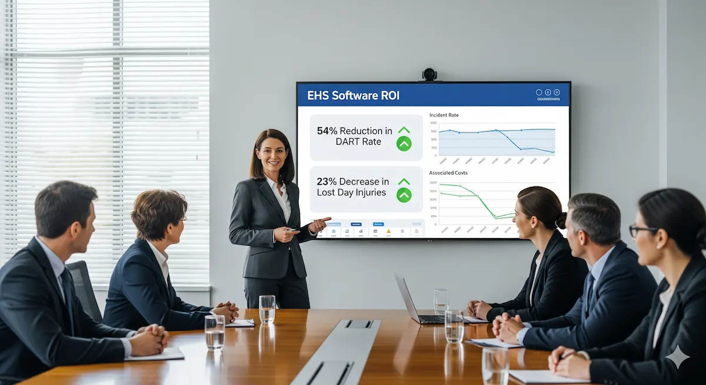

Jun 7, 2025

In previous articles, we established that EHS software is not a "plug and play" fix. We've covered the importance of site culture and the necessity of a phased deployment. Now, we address the bottom line: results. Part 4 focuses on how to measure the real-world impact of your investment and how to prove its value without relying on vendor buzzwords.
The true value of EHS software isn't in its feature list but in the physical results it delivers to organisational safety, efficiency, and compliance. Examining real-world case studies and understanding common mistakes shows how to achieve these results and prove a clear return on investment.
Several organisations have successfully used EHS software to make significant improvements. While these vendor-curated examples show the potential for transformation, the real work lies in building the "human scaffolding" required to make the technology stick. These success stories work when technology is paired with a clear strategy and on-site commitment:
These case studies often highlight improvements in lagging indicators, such as reduced incident rates. However, the underlying success is frequently driven by significant improvements in managing leading indicators, like increased safety observations, more thorough near-miss reporting, and the timely completion of corrective and preventive actions, all made possible by the capabilities of the EHS software.5 When presenting the ROI of EHS software, it is crucial to connect the points: the software's ability to improve the capture and management of leading indicators is what ultimately reduces negative outcomes, providing a more complete picture of proactive and effective EHS management.
The ROI of EHS software is often presented as a list of saved costs: lower medical bills, reduced compensation claims, or fewer fines. While these are real, they are lagging metrics. They tell you what you saved after the fact. The real ROI lies in **information efficiency**—reducing the friction between a field hazard being spotted and a corrective action being closed.
When an organisation says "the budget won't allow it," they are usually overlooking the invisible cost of a broken data model. A site manager who spends four hours a week manually compiling audit reports is a $10,000/year information failure. A paper-based permit system that delays a $50 million maintenance shutdown by half a day is a $100,000 failure. These are the tangible inputs that build a business case Sarah can use in a Monday morning meeting.6
To show true value, you must take a broad view that includes both financial metrics and the strength of your safety infrastructure. An improved safety culture or better employee retention are often treated as "soft" benefits, but they are the leading indicators of long-term business survival. High-Reliability Organisations (HROs) know that safety is not the absence of incidents, but the presence of capacity—and software is the tool that measures that capacity.5
Even as we move toward an era of AI and automated sensors, the core challenge remains the same. Automation might replace human reporting, but "information friction" simply moves from the field worker to the data pipeline. Whether the signal comes from a person or a sensor, the ROI still depends on how quickly that information leads to a corrective action.7
Understanding common mistakes is as important as identifying best practices. The "lessons learned" from failed EHS software implementations consistently point back to the same issues: an underestimation of change management, insufficient user engagement, and a lack of sustained leadership. These failures aren't accidents. They happen when a company treats software as a standalone tool instead of a system that only works if people actually use it. The following table outlines the most frequent mistakes and how to avoid them:
| Common Mistake | Typical Impact on Project Success | Proactive Mitigation Strategy |
|---|---|---|
| Focusing Too Much on Technology | Neglecting the people and processes, leading to a system that no one uses. Low ROI. | Prioritise the people (culture, change management) and process alignment as much as the software choice. |
| Lack of Clear Leadership Commitment | Project lacks direction and resources; employee buy-in is low; the project eventually fails. | Secure visible and sustained sponsorship from the C-suite. Leaders must champion the vision and provide the budget. |
| Poorly Defined Requirements | The software doesn't solve the right problems; wasted investment and user frustration. | Conduct thorough needs analysis involving the people who will actually use the tool. Define clear "must-haves." |
| System Designed for EHS Only | Low user adoption; frontline staff perceive the system as a burden rather than a help. | Engage end-users early. Ensure the system provides value to a supervisor on the floor, not just an EHS manager in an office. |
| Poor Data Integrity ("Garbage In, Garbage Out") | Inaccurate reporting and flawed analytics. | Develop a **data migration** plan (moving old records into the new system correctly). Establish data governance—the rules for who enters what. |
| Too Many Customizations | Automating inefficient processes; creating a complex, costly system that is hard to maintain. | Use the vendor's standard configurations. Re-engineer your processes to fit the software where possible to stay on the best-practice path. |
| No Buy-in Strategy | High resistance to change and underutilization of software features. | Implement a formal change management plan. Communicate consistently and address concerns directly. |
| Inadequate or Rushed Training | Users lack confidence, leading to errors and avoidance of the system. | Provide role-based, ongoing training. Offer continuous learning opportunities and accessible support. |
| Lack of Mobility / Offline Access | Field workers cannot report data or access information in remote areas. | Prioritise solutions with reliable mobile capabilities, including offline access for disconnected environments. |
| Insufficient IT Support | Technical issues are not resolved promptly, leading to downtime and frustration. | Ensure clear **SLAs** (contractual promises on fix times) with the vendor. Adequately resource your internal IT support. |
| Treating Software as "Just Another System" | The tool remains isolated instead of being the central hub for safety work. | Embed the software use into standard operating procedures and daily job responsibilities. |
| Not Acting on Outputs | Repeating past mistakes; data is collected but never used for improvement. | Establish a process for acting on the insights the software provides. Assign responsibility for implementing improvements. |
Avoiding these mistakes is about more than just project management. It’s about ensuring that your investment actually delivers a safer, more efficient site. Demonstrating ROI isn’t just about justifying the spend; it’s about proving that the software makes the right behaviour easier than the wrong one.
Coming up in Part 5: EHS for Enterprises, we will look at how to scale these foundations across global operations.